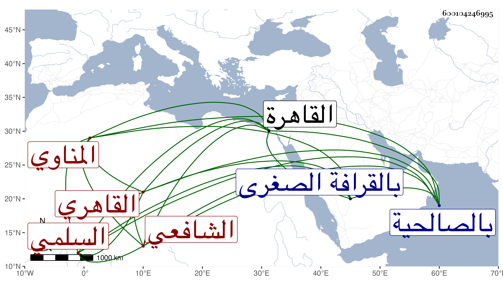

0902Sakhawi.DawLamic.ITO20230111-ara1.EIS1600.600104246995
Biography ID: 600104246995
أحمد بن عثمان بن محمد بن إسحاق بن إبراهيم البهاء أبو الفتوح بن الفخر أبي عمرو بن التاج أبي عبد الله بن البهاء أبي الفداء المناوي الأصل السلمي القاهري الشافعي أخو البدر محمد ووالد علي وعمر الآتي ذكرهم . ولد في رجب سنة أربع وثمانين وسبعمائة واشتغل على ابن عم والده الصدر المناوي وغيره وأجيز بالإفتاء والتدريس واستقر هو وأخوه بعد أبيهما في وظائفه كالجاولية والسعدية والسكرية والقطبية العتيقة والمجدية والمشهد الحسيني وإفتاء دار العدل ، وخطب بالجامع الحاكمي وقبله بالصالحية وناب في الحكم بالقاهرة وغيرها من أعمال الوجه البحري ، وولي أنظارا كثيرة وتزوج خديجة ابنة النور علي بن السراج ابن الملقن وأولدها المذكورين وابنة تزوج بها الولوي السفطي وغيره ، وكان حسن السمت والتودد وافر العقل كثير المروءة محبا في أهل العلم رئيسا ذا وجاهة زائدة بحيث عين مرة للقضاء وكانت نفسه تسمو إليه فلم يتفق . مات في يوم الاثنين سادس عشر رمضان سنة خمس وعشرين عن نحو الأربعين ودفن بالقرافة الصغرى ، واستقر ابناه في جهاته واستنيب عنهما خالهما جلال الدين بن الملقن رحمه الله . ذكره شيخنا باختصار في إنبائه ، وحكى لي ولده النور أنه روى عن الشهاب البطائحي وأنه كان يطالع المطلب ويحضر دروس الجلال البلقيني فيستكثر الجلال ما يبديه من الأبحاث والنقول ويضج من ذلك بحيث أداه إلى أخذ النسخة التي كان يطالع منها من خازن كتب الخطيري واستكتمه ومع هذا فلم يخف على البهاء وعدل لنظر غيره من كتب الأصحاب التي بالمحمودية وغيرها ولزم طريقته في المباحثة ونحوها حتى صار الجلال يقول له أنت تطالع من خزانة محمود وأنا أستمد من الملك المحمود . تم الجزء الأول وأول الثاني ترجمة ابن الصلف
